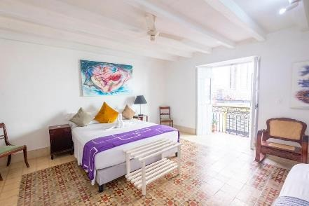

Présentation
Le voyage en un coup d'œil
Du 19 octobre au 4 novembre 2026, vibrez au rythme du tango lors du 7ème Festival de Tango de La Havane — un événement unique mêlant passion et culture cubaine — puis prolongez l'aventure à la découverte des trésors de l'île.

La Havane
La Vieille ville coloniale, le Vedado
Le Festival de Tango
Spectacles, cours avec des maestros, milongas sous les étoiles


Trinidad
Joyau colonial classé à l'UNESCO, ruelles pavées, Manaca Iznaga
La Baie des Cochons
Playa Larga et la Ciénega de Zapata